Prometheus+Grafana+Alertmanager 构建监控系统 Prometheus 介绍
Prometheus 是一个开源的系统监控和报警系统，现在已经加入到 CNCF 基金会，成为继 k8s 之后第二个在 CNCF 托管的项目，在 kubernetes 容器管理系统中，通常会搭配 prometheus 进行监控，同时也支持多种 exporter 采集数据，还支持 pushgateway 进行数据上报，Prometheus 性能足够支撑上万台规模的集群。
Prometheus 特点
多维度数据模型
每一个时间序列数据都由 metric 度量指标名称和它的标签 labels 键值对集合唯一确定：
这个 metric 度量指标名称指定监控目标系统的测量特征（如：http_requests_total- 接收 http 请求的总计数）。labels 开启了 Prometheus 的多维数据模型：对于相同的度量名称，通过不同标签列表的结合, 会形成特定的度量维度实例。(例如：所有包含度量名称为/api/tracks 的 http 请求，打上 method=POST 的标签，则形成了具体的 http 请求)。这个查询语言在这些度量和标签列表的基础上进行过滤和聚合。改变任何度量上的任何标签值，则会形成新的时间序列图。
灵活的查询语言（PromQL）
可以对采集的 metrics 指标进行加法，乘法，连接等操作；
可以直接在本地部署，不依赖其他分布式存储；
通过基于 HTTP 的 pull 方式采集时序数据；
可以通过中间网关 pushgateway 的方式把时间序列数据推送到 prometheus server 端；
可通过服务发现或者静态配置来发现目标服务对象（targets）。
有多种可视化图像界面，如 Grafana 等。
高效的存储，每个采样数据占 3.5 bytes 左右，300 万的时间序列，30s 间隔，保留 60 天，消耗磁盘大概 200G。
做高可用，可以对数据做异地备份，联邦集群，部署多套 prometheus，pushgateway 上报数据
样本：在时间序列中的每一个点称为一个样本（sample），样本由以下三部分组成：
指标（metric）：指标名称和描述当前样本特征的 labelsets；
时间戳（timestamp）：一个精确到毫秒的时间戳；
样本值（value）： 一个 folat64 的浮点型数据表示当前样本的值。
表示方式：
通过如下表达方式表示指定指标名称和指定标签集合的时间序列：
<metric name>{<label name>=<label value>, …}
例如，指标名称为 api_http_requests_total，标签为 method=”POST” 和 handler=”/messages”的时间序列可以表示为：
api_http_requests_total{method=”POST”, handler=”/messages”}
Prometheus 组件介绍 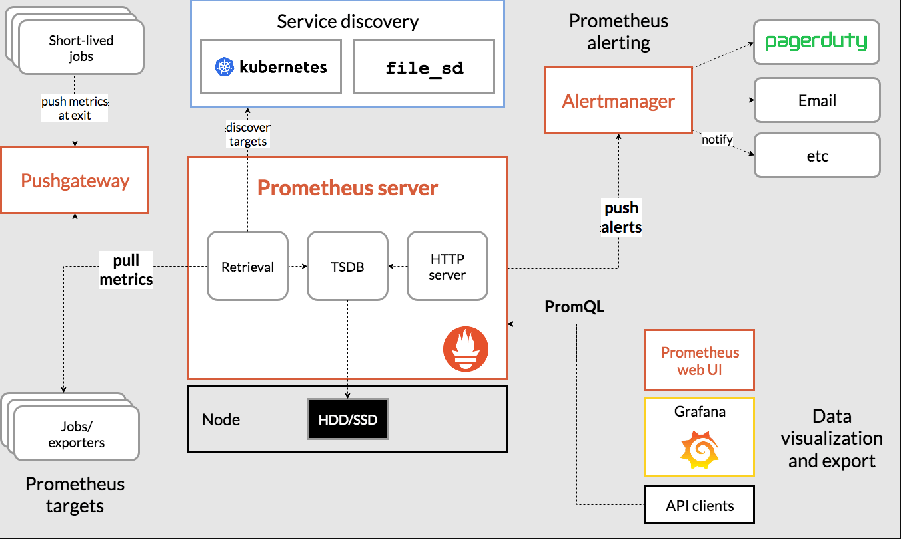
Prometheus Server: 用于收集和存储时间序列数据。
Client Library: 客户端库，检测应用程序代码，当 Prometheus 抓取实例的 HTTP 端点时，客户端库会将所有跟踪的 metrics 指标的当前状态发送到 prometheus server 端。
Exporters: prometheus 支持多种 exporter，通过 exporter 可以采集 metrics 数据，然后发送到prometheus server 端，所有向 promtheus server 提供监控数据的程序都可以被称为 exporter
Alertmanager: 从 Prometheus server 端接收到 alerts 后，会进行去重，分组，并路由到相应的接收方，发出报警，常见的接收方式有：电子邮件，微信，钉钉, slack 等。
Grafana：监控仪表盘，可视化监控数据
pushgateway: 各个目标主机可上报数据到 pushgateway，然后 prometheus server 统一从pushgateway 拉取数据。
从上图可发现，Prometheus 整个生态圈组成主要包括 prometheus server，Exporter，pushgateway，alertmanager，grafana，Web ui 界面，Prometheus server 由三个部分组成，
Retrieval，Storage，PromQL
Retrieval 负责在活跃的 target 主机上抓取监控指标数据
Storage 存储主要是把采集到的数据存储到磁盘中
PromQL 是 Prometheus 提供的查询语言模块。
Prometheus 工作流程
Prometheus server 可定期从活跃的（up）目标主机上（target）拉取监控指标数据，目标主机的监控数据可通过配置静态 job 或者服务发现的方式被 prometheus server 采集到，这种方式默认的 pull方式拉取指标；也可通过 pushgateway 把采集的数据上报到 prometheus server 中；还可通过一些组件自带的 exporter 采集相应组件的数据；
Prometheus server 把采集到的监控指标数据保存到本地磁盘或者数据库；
Prometheus 采集的监控指标数据按时间序列存储，通过配置报警规则，把触发的报警发送到 alertmanager
Alertmanager 通过配置报警接收方，发送报警到邮件，微信或者钉钉等
Prometheus 自带的 web ui 界面提供 PromQL 查询语言，可查询监控数据
Grafana 可接入 prometheus 数据源，把监控数据以图形化形式展示出
Prometheus 和 zabbix 对比分析 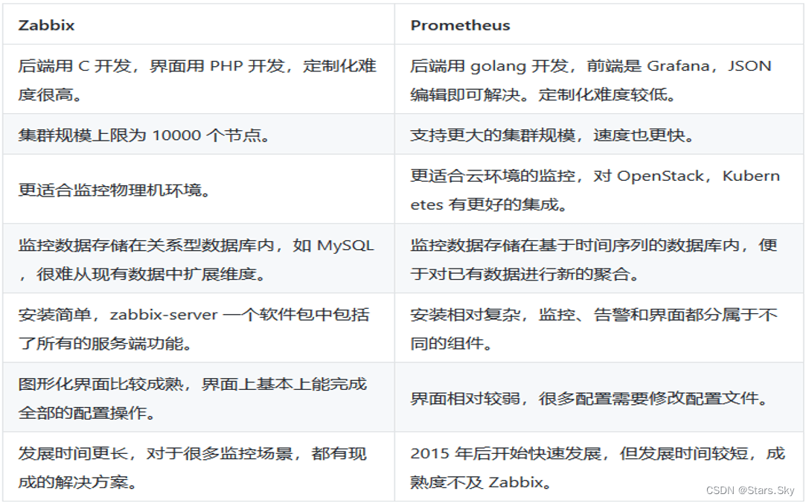
Prometheus 的几种部署模式
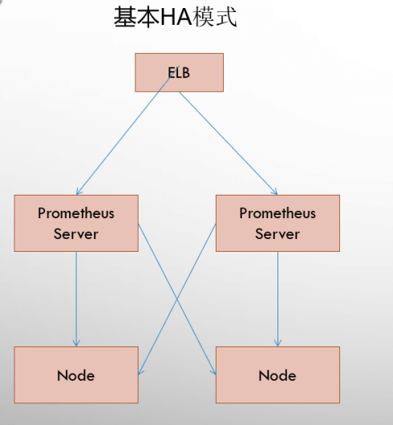
基本的 HA 模式只能确保 Promthues 服务的可用性问题，但是不解决 Prometheus Server 之间的数据一致性问题以及持久化问题(数据丢失后无法恢复)，也无法进行动态的扩展。因此这种部署方式适合监控规模不大，Promthues Server 也不会频繁发生迁移的情况，并且只需要保存短周期监控数据的场景。
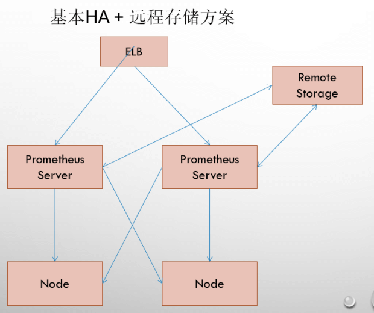
在解决了 Promthues 服务可用性的基础上，同时确保了数据的持久化，当 Promthues Server 发生宕机或者数据丢失的情况下，可以快速的恢复。 同时 Promthues Server 可能很好的进行迁移。因此，该方案适用于用户监控规模不大，但是希望能够将监控数据持久化，同时能够确保 Promthues Server 的可迁移性的场景。
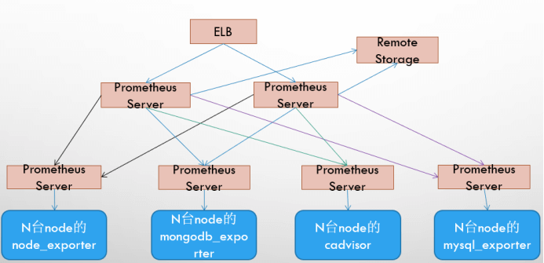
Promthues 的性能瓶颈主要在于大量的采集任务，因此用户需要利用 Prometheus 联邦集群的特性，将不同类型的采集任务划分到不同的 Promthues 子服务中，从而实现功能分区。例如一个 Promthues Server 负责采集基础设施相关的监控指标，另外一个 Prometheus Server 负责采集应用监控指标。再有上层 Prometheus Server 实现对数据的汇聚。
Prometheus 的四种数据类型 Counter：计数器类型
Counter 用于累计值，例如记录请求次数、任务完成数、错误发生次数。
一直增加，不会减少
重启进程后，会被重置
例如：
http_response_total {method=”GET”,endpoint=”/api/tracks”} 100
http_response_total {method=”GET”,endpoint=”/api/tracks”} 160
Counter 类型数据可以让用户方便的了解事件产生的速率的变化，在 PromQL 内置的相关操作函数可以提供相应的分析，比如以 HTTP 应用请求量来进行说明
通过 rate() 函数获取 HTTP 请求量的增长率
rate(http_requests_total[5m])
查询当前系统中，访问量前10和HTTP地址
topk(10, http_requests_total)
Gauge：测量器类型
Gauge 是常规数值，例如温度变化、内存使用变化
可变大，可变小
重启进程后，会被重置
例如：
memory_usage_bytes {host=”master-01”} 100
memory_usage_bytes {host=”master-01”} 30
memory_usage_bytes {host=”master-01”} 50
memory_usage_bytes {host=”master-01”} 80
对于 Gauge 类型的监控指标，通过 PromQL 内置函数 delta() 可以获取样本在一段时间内的变化情况，例如，计算 CPU 温度在两小时内的差异：
dalta(cpu_temp_celsius {host=”zeus”}[2h])
你还可以通过 PromQL 内置函数 predict_linear() 基于简单线性回归的方式，对样本数据的变化趋势做出预测。例如，基于 2 小时的样本数据，来预测主机可用磁盘空间在 4 个小时之后的剩余情况：
predict_linear(node_filesystem_free{job=”node”}[2h], 4 * 3600) < 0
histogram：柱状图
在 Prometheus 系统的查询语言中，有三种作用
在一段时间范围内对数据进行采样（通常是请求持续时间或响应大小等），并将其计入可配置的存储桶（bucket）中. 后续可通过指定区间筛选样本，也可以统计样本总数，最后一般将数据展示为直方图。对每个采样点值累计和(sum)
对采样点的次数累计和(count)
度量指标名称: [basename]_上面三类的作用度量指标名称
[basename]_bucket{le=”上边界”}, 这个值为小于等于上边界的所有采样点数量
[basename]_sum
[basename]_count
如果定义一个度量类型为 Histogram，则 Prometheus 会自动生成三个对应的指标
为什需要用 histogram 柱状图？
在大多数情况下人们都倾向于使用某些量化指标的平均值，例如 CPU 的平均使用率、页面的平均响应时间。这种方式的问题很明显，以系统 API 调用的平均响应时间为例：如果大多数 API 请求都维在 100ms 的响应时间范围内，而个别请求的响应时间需要 5s，那么就会导致某些 WEB 页面的响应时间落到中位数的情况，而这种现象被称为长尾问题。
为了区分是平均的慢还是长尾的慢，最简单的方式就是按照请求延迟的范围进行分组。例如，统计延迟在 010ms 之间的请求数有多少，而 1020ms 之间的请求数又有多少。通过这种方式可以快速分析
系统慢的原因。Histogram 和 Summary 都是为了能够解决这样问题的存在，通过 Histogram 和 Summary 类型的监控指标，我们可以快速了解监控样本的分布情况。
Histogram 类型的样本会提供三种指标（假设指标名称为 <basename>）： 样本的值分布在 bucket 中的数量，命名为 _bucket{le=”<上边界>”}。解释的更通俗易懂一点，这个值表示指标值小于等于上边界的所有样本数量。
在总共 2 次请求当中。http 请求响应时间 <=0.005 秒 的请求次数为 0
io_namespace_http_requests_latency_seconds_histogram_bucket{path=”/“,method=”GET”,code=”200”,le=”0.005”,} 0.0
在总共 2 次请求当中。http 请求响应时间 <=0.01 秒 的请求次数为 0
io_namespace_http_requests_latency_seconds_histogram_bucket{path=”/“,method=”GET”,code=”200”,le=”0.01”,} 0.0
在总共 2 次请求当中。http 请求响应时间 <=0.025 秒 的请求次数为 0
io_namespace_http_requests_latency_seconds_histogram_bucket{path=”/“,method=”GET”,code=”200”,le=”0.025”,} 0.0
io_namespace_http_requests_latency_seconds_histogram_bucket{path=”/“,method=”GET”,code=”200”,le=”0.05”,} 0.0
io_namespace_http_requests_latency_seconds_histogram_bucket{path=”/“,method=”GET”,code=”200”,le=”0.075”,} 0.0
io_namespace_http_requests_latency_seconds_histogram_bucket{path=”/“,method=”GET”,code=”200”,le=”0.1”,} 0.0
io_namespace_http_requests_latency_seconds_histogram_bucket{path=”/“,method=”GET”,code=”200”,le=”0.25”,} 0.0
io_namespace_http_requests_latency_seconds_histogram_bucket{path=”/“,method=”GET”,code=”200”,le=”0.5”,} 0.0
io_namespace_http_requests_latency_seconds_histogram_bucket{path=”/“,method=”GET”,code=”200”,le=”0.75”,} 0.0
io_namespace_http_requests_latency_seconds_histogram_bucket{path=”/“,method=”GET”,code=”200”,le=”1.0”,} 0.0
io_namespace_http_requests_latency_seconds_histogram_bucket{path=”/“,method=”GET”,code=”200”,le=”2.5”,} 0.0
io_namespace_http_requests_latency_seconds_histogram_bucket{path=”/“,method=”GET”,code=”200”,le=”5.0”,} 0.0
io_namespace_http_requests_latency_seconds_histogram_bucket{path=”/“,method=”GET”,code=”200”,le=”7.5”,} 2.0
在总共 2 次请求当中。http 请求响应时间 <=10 秒 的请求次数为 2
io_namespace_http_requests_latency_seconds_histogram_bucket{path=”/“,method=”GET”,code=”200”,le=”10.0”,} 2.0
io_namespace_http_requests_latency_seconds_histogram_bucket{path=”/“,method=”GET”,code=”200”,le=”+Inf”,} 2.0
所有样本值的大小总和，命名为 <basename>_sum。
实际含义： 发生的 2 次 http 请求总的响应时间为 13.107670803000001 秒
io_namespace_http_requests_latency_seconds_histogram_sum{path=”/“,method=”GET”,code=”200”,} 13.107670803000001
样本总数，命名为 <basename>_count。值和 <basename>_bucket{le=”+Inf”} 相同。
实际含义： 当前一共发生了 2 次 http 请求
io_namespace_http_requests_latency_seconds_histogram_count{path=”/“,method=”GET”,code=”200”,} 2.0
注意：
bucket 可以理解为是对数据指标值域的一个划分，划分的依据应该基于数据值的分布。注意后面的采样点是包含前面的采样点的，假设 xxx_bucket{…,le=”0.01”} 的值为 10，而xxx_bucket{…,le=”0.05”} 的值为 30，那么意味着这 30 个采样点中，有 10 个是小于 0.01s 的，其余 20 个采样点的响应时间是介于 0.01s 和 0.05s 之间的。
可以通过 histogram_quantile() 函数来计算 Histogram 类型样本的分位数。分位数可能不太好理解，你可以理解为分割数据的点。我举个例子，假设样本的 9 分位数（quantile=0.9）的值为 x，即表示小于 x 的采样值的数量占总体采样值的 90%。Histogram 还可以用来计算应用性能指标值（Apdex score）。
summary
与 Histogram 类型类似，用于表示一段时间内的数据采样结果（通常是请求持续时间或响应大小等），但它直接存储了分位数（通过客户端计算，然后展示出来），而不是通过区间来计算。它也有三种作用：
对于每个采样点进行统计，并形成分位图。（如：正态分布一样，统计低于 60 分不及格的同学比例，统计低于 80 分的同学比例，统计低于 95 分的同学比例）
统计班上所有同学的总成绩(sum)
统计班上同学的考试总人数(count)
带有度量指标的[basename]的 summary 在抓取时间序列数据有如命名。
观察时间的 φ-quantiles (0 ≤ φ ≤ 1), 显示为[basename]{分位数=”[φ]”}
[basename]_sum，是指所有观察值的总和
[basename]_count， 是指已观察到的事件计数值
样本值的分位数分布情况，命名为 <basename>{quantile=”<φ>”}。
含义：这 12 次 http 请求中有 50% 的请求响应时间是 3.052404983s
io_namespace_http_requests_latency_seconds_summary{path=”/“,method=”GET”,code=”200”,quantile=”0.5”,} 3.052404983
含义：这 12 次 http 请求中有 90% 的请求响应时间是 8.003261666s
io_namespace_http_requests_latency_seconds_summary{path=”/“,method=”GET”,code=”200”,quantile=”0.9”,} 8.003261666
所有样本值的大小总和，命名为 <basename>_sum。
含义：这 12 次 http 请求的总响应时间为 51.029495508s
io_namespace_http_requests_latency_seconds_summary_sum{path=”/“,method=”GET”,code=”200”,} 51.029495508
样本总数，命名为 <basename>_count。
含义：当前一共发生了 12 次 http 请求
io_namespace_http_requests_latency_seconds_summary_count{path=”/“,method=”GET”,code=”200”,} 12.0
现在可以总结一下 Histogram 与 Summary 的异同：
它们都包含了 <basename>_sum 和 <basename>_count 指标
Histogram 需要通过 <basename>_bucket 来计算分位数，而 Summary 则直接存储了分位数的值。
prometheus_tsdb_wal_fsync_duration_seconds{quantile=”0.5”} 0.012352463
prometheus_tsdb_wal_fsync_duration_seconds{quantile=”0.9”} 0.014458005
prometheus_tsdb_wal_fsync_duration_seconds{quantile=”0.99”} 0.017316173
prometheus_tsdb_wal_fsync_duration_seconds_sum 2.888716127000002
prometheus_tsdb_wal_fsync_duration_seconds_count 216
从上面的样本中可以得知当前 Promtheus Server 进行 wal_fsync 操作的总次数为 216 次，耗时 2.888716127000002s。其中中位数（quantile=0.5）的耗时为 0.012352463，9 分位数（quantile=0.9）的耗时为 0.014458005s。
Prometheus 能监控什么
Databases
Hardware related
Messaging systems
Storage
HTTP
APIs
Logging
Other monitoring systems
Miscellaneous
Software exposing Prometheus metrics
DATABASE-数据库
Aerospike exporter
ClickHouse exporter
Consul exporter (official)
Couchbase exporter
CouchDB exporter
ElasticSearch exporterEventStore exporter
Memcached exporter (official)MongoDB exporter MSSQL server exporter
MySQL server exporter (official)OpenTSDB ExporterOracle DB ExporterPgBouncer exporter
PostgreSQL exporterProxySQL exporter
RavenDB exporter
Redis exporterRethinkDB exporter
SQL exporterTarantool metric library
Twemproxy
apcupsd exporter
Collins exporter
IBM Z HMC exporterIoT Edison exporter
IPMI exporter
knxd exporter
Netgear Cable Modem Exporter
Node/system metrics exporter (official)NVIDIA GPU exporter
ProSAFE exporter
Ubiquiti UniFi exporter
Messaging systems-消息服务
Beanstalkd exporter
Gearman exporter
Kafka exporterNATS exporter
NSQ exporter
Mirth Connect exporter
MQTT blackbox exporter
RabbitMQ exporterRabbitMQ Management Plugin exporter
Storage-存储
Ceph exporterCeph RADOSGW exporter
Gluster exporterHadoop HDFS FSImage exporterLustre exporter
ScaleIO exporter
HTTP-网站服务
Apache exporterHAProxy exporter (official)
Nginx metric library
Nginx VTS exporterPassenger exporter
Squid exporterTinyproxy exporter
Varnish exporter
WebDriver exporter
API
AWS ECS exporterAWS Health exporter
AWS SQS exporter
Cloudflare exporter
DigitalOcean exporter
Docker Cloud exporterDocker Hub exporterGitHub exporterInstaClustr exporter
Mozilla Observatory exporter
OpenWeatherMap exporter
Pagespeed exporter
Rancher exporterSpeedtest exporter
Logging-日志
Fluentd exporterGoogle’s mtail log data extractor
Grok exporter
Other monitoring systems
Akamai Cloudmonitor exporter
Alibaba Cloudmonitor exporterAWS CloudWatch exporter (official)
Cloud Foundry Firehose exporterCollectd exporter (official)
Google Stackdriver exporter
Graphite exporter (official)
Heka dashboard exporter
Heka exporter
InfluxDB exporter (official)JavaMelody exporter
JMX exporter (official)
Munin exporter
Nagios / Naemon exporterNew Relic exporter
NRPE exporter
Osquery exporter
OTC CloudEye exporter
Pingdom exporter
scollector exporter
Sensu exporter
SNMP exporter (official)StatsD exporter (official)
Miscellaneous-其他
ACT Fibernet Exporter
Bamboo exporter
BIG-IP exporter
BIND exporterBitbucket exporter
Blackbox exporter (official)BOSH exporter
cAdvisorCachet exporter
ccache exporter
Confluence exporter
Dovecot exporter
eBPF exporter
Ethereum Client exporter
Jenkins exporterJIRA exporterKannel exporter
Kemp LoadBalancer exporter
Kibana Exporter
Meteor JS web framework exporter
Minecraft exporter module
PHP-FPM exporter
PowerDNS exporter
Presto exporter
Process exporter
rTorrent exporter
SABnzbd exporter
Script exporter
Shield exporter
SMTP/Maildir MDA blackbox proberSoftEther exporter
Transmission exporter
Unbound exporter
Xen exporter
Software exposing Prometheus metrics-Prometheus 度量指标
App Connect Enterprise
Ballerina
Ceph
Collectd
Concourse
CRG Roller Derby Scoreboard (direct)
Docker Daemon
Doorman (direct)
Etcd (direct)
Flink
FreeBSD Kernel
Grafana
JavaMelody
Kubernetes (direct)Linkerd
Prometheus 对 kubernetes 的监控
对于 Kubernetes 而言，我们可以把当中所有的资源分为几类
基础设施层（Node）：集群节点，为整个集群和应用提供运行时资源
容器基础设施（Container）：为应用提供运行时环境
用户应用（Pod）：Pod 中会包含一组容器，它们一起工作，并且对外提供一个（或者一组）功能
内部服务负载均衡（Service）：在集群内，通过 Service 在集群暴露应用功能，集群内应用和应用之间访问时提供内部的负载均衡
外部访问入口（Ingress）：通过 Ingress 提供集群外的访问入口，从而可以使外部客户端能够访问到部署在 Kubernetes 集群内的服务
因此，如果要构建一个完整的监控体系，我们应该考虑，以下 5 个方面：
集群节点状态监控：从集群中各节点的 kubelet 服务获取节点的基本运行状态；
集群节点资源用量监控：通过 Daemonset 的形式在集群中各个节点部署 Node Exporter 采集节点的资源使用情况；
节点中运行的容器监控：通过各个节点中 kubelet 内置的 cAdvisor 中获取个节点中所有容器的运行状态和资源使用情况；
如果在集群中部署的应用程序本身内置了对 Prometheus 的监控支持，那么我们还应该找到相应的 Pod 实例，并从该 Pod 实例中获取其内部运行状态的监控指标。
对 k8s 本身的组件做监控：apiserver、scheduler、controller-manager、kubelet、kube-proxy
node-exporter 组件安装和配置
机器规划：
k8s 集群是一个 master 节点和一个 node 节点
master 节点的机器 ip 是 192.168.1.180，主机名是 master1
node 节点的机器 ip 是 192.168.1.181，主机名是 node1
node-exporter 介绍
node-exporter 可以采集机器（物理机、虚拟机、云主机等）的监控指标数据，能够采集到的指标包括 CPU，内存，磁盘，网络，文件数等信息
安装 node-exporter 1 2 3 4 5 6 7 8 9 10 11 12 13 14 15 16 17 18 19 20 21 22 23 24 25 26 27 28 29 30 31 32 33 34 35 36 37 38 39 40 41 42 43 44 45 46 47 48 49 50 51 52 53 54 55 56 57 58 59 60 61 62 63 64 65 66 67 68 69 70 71 72 73 74 75 76 77 78 79 80 81 82 83 84 85 86 87 88 89 90 91 92 93 94 95 96 97 98 99 100 101 102 103 104 105 106 107 108 109 110 111 112 113 114 [root@master1 ~ ] apiVersion: apps/v1 kind: DaemonSet metadata: name: node-exporter namespace: monitor-sa labels: name: node-exporter spec: selector: matchLabels: name: node-exporter template: metadata: labels: name: node-exporter spec: tolerations: - key: node-role.kubernetes.io/master operator: Exists effect: NoSchedule hostPID: true hostIPC: true hostNetwork: true containers: - name: node-exporter image: prom/node-exporter:v0.16.0 imagePullPolicy: IfNotPresent ports: - containerPort: 9100 resources: requests: cpu: 0.15 securityContext: privileged: true args: - --path.procfs - /host/proc - --path.sysfs - /host/sys - --collector.filesystem.ignored-mount-points - '"^/(sys|proc|dev|host|etc)($|/)"' volumeMounts: - name: dev mountPath: /host/dev - name: proc mountPath: /host/proc - name: sys mountPath: /host/sys - name: rootfs mountPath: /rootfs volumes: - name: dev hostPath: path: /dev - name: proc hostPath: path: /proc - name: sys hostPath: path: /sys - name: rootfs hostPath: path: / [root@master1 ~ ] NAME READY STATUS RESTARTS AGE node-exporter-f5jg2 1 /1 Running 0 4m3s node-exporter-rz7zz 1 /1 Running 0 4m3s [root@master1 ~ ] [root@master1 ~ ] node_cpu_seconds_total{cpu="0",mode="idle"} 170000.46 node_cpu_seconds_total{cpu="0",mode="iowait"} 47.66 node_cpu_seconds_total{cpu="0",mode="irq"} 0 node_cpu_seconds_total{cpu="0",mode="nice"} 0.11 node_cpu_seconds_total{cpu="0",mode="softirq"} 192.35 node_cpu_seconds_total{cpu="0",mode="steal"} 0 node_cpu_seconds_total{cpu="0",mode="system"} 1656.01 node_cpu_seconds_total{cpu="0",mode="user"} 1362.17 node_cpu_seconds_total{cpu="0",mode="idle"} 170000.46 [root@master1 ~ ] node_load1 1.48
Prometheus server 安装和配置 创建 sa 账号，对 sa 做 rbac 授权 1 2 3 4 5 # 创建一个 sa 账号 monitor [root@master1 ~]# kubectl create sa monitor -n monitor-sa # 把 sa 账号 monitor 通过 clusterbinding 绑定到 clusterrole 上 [root@master1 ~]# kubectl create clusterrolebinding monitor-clusterrulebinding -n monitor-sa --clusterrole=cluster-admin --serviceaccount=monitor-sa:monitor
创建 prometheus 数据存储目录 1 2 3 4 # 在 k8s 集群 node1 节点上创建数据存储目录 [root@node1 ~]# mkdir /data [root@node1 ~]# chmod 777 /data
安装 prometheus server 服务
创建一个 configmap 存储卷，用来存放 prometheus 配置信息
1 2 3 4 5 6 7 8 9 10 11 12 13 14 15 16 17 18 19 20 21 22 23 24 25 26 27 28 29 30 31 32 33 34 35 36 37 38 39 40 41 42 43 44 45 46 47 48 49 50 51 52 53 54 55 56 57 58 59 60 61 62 63 64 65 66 67 68 69 70 71 72 73 74 75 76 77 78 79 80 81 82 83 84 85 86 87 88 89 90 91 92 93 94 95 96 97 98 99 100 101 102 103 104 105 106 107 108 109 110 111 112 113 114 115 116 117 118 119 120 121 122 123 124 125 126 127 128 --- kind: ConfigMap apiVersion: v1 metadata: labels: app: prometheus name: prometheus-config namespace: monitor-sa data: prometheus.yml: | global: scrape_interval: 15s # 采集目标主机监控数据的时间间隔 scrape_timeout: 10s # 数据采集超时时间 evaluation_interval: 1m # 触发告警检测的时间 scrape_configs: # 配置数据源，称为 target，每个 target 用 job_name 命名。又分为静态配置和服务发现 - job_name: 'kubernetes-node' kubernetes_sd_configs: - role: node relabel_configs: - source_labels: [__address__ ] regex: '(.*):10250' replacement: '${1}:9100' target_label: __address__ action: replace - action: labelmap regex: __meta_kubernetes_node_label_(.+) - job_name: 'kubernetes-node-cadvisor' kubernetes_sd_configs: - role: node scheme: https tls_config: ca_file: /var/run/secrets/kubernetes.io/serviceaccount/ca.crt bearer_token_file: /var/run/secrets/kubernetes.io/serviceaccount/token relabel_configs: - action: labelmap regex: __meta_kubernetes_node_label_(.+) - target_label: __address__ replacement: kubernetes.default.svc:443 - source_labels: [__meta_kubernetes_node_name ] regex: (.+) target_label: __metrics_path__ replacement: /api/v1/nodes/${1}/proxy/metrics/cadvisor - job_name: 'kubernetes-apiserver' kubernetes_sd_configs: - role: endpoints scheme: https tls_config: ca_file: /var/run/secrets/kubernetes.io/serviceaccount/ca.crt bearer_token_file: /var/run/secrets/kubernetes.io/serviceaccount/token relabel_configs: - source_labels: [__meta_kubernetes_namespace , __meta_kubernetes_service_name , __meta_kubernetes_endpoint_port_name ] action: keep regex: default;kubernetes;https - job_name: 'kubernetes-service-endpoints' kubernetes_sd_configs: - role: endpoints relabel_configs: - source_labels: [__meta_kubernetes_service_annotation_prometheus_io_scrape ] action: keep regex: true - source_labels: [__meta_kubernetes_service_annotation_prometheus_io_scheme ] action: replace target_label: __scheme__ regex: (https?) - source_labels: [__meta_kubernetes_service_annotation_prometheus_io_path ] action: replace target_label: __metrics_path__ regex: (.+) - source_labels: [__address__ , __meta_kubernetes_service_annotation_prometheus_io_port ] action: replace target_label: __address__ regex: ([^:]+)(?::\d+)?;(\d+) replacement: $1:$2 - action: labelmap regex: __meta_kubernetes_service_label_(.+) - source_labels: [__meta_kubernetes_namespace ] action: replace target_label: kubernetes_namespace - source_labels: [__meta_kubernetes_service_name ] action: replace target_label: kubernetes_name
通过 deployment 部署 prometheus
1 2 3 4 5 6 7 8 9 10 11 12 13 14 15 16 17 18 19 20 21 22 23 24 25 26 27 28 29 30 31 32 33 34 35 36 37 38 39 40 41 42 43 44 45 46 47 48 49 50 51 52 53 54 55 56 57 58 59 60 61 62 63 64 65 --- apiVersion: apps/v1 kind: Deployment metadata: name: prometheus-server namespace: monitor-sa labels: app: prometheus spec: replicas: 1 selector: matchLabels: app: prometheus component: server template: metadata: labels: app: prometheus component: server annotations: prometheus.io/scrape: 'false' spec: nodeName: node1 serviceAccountName: monitor containers: - name: prometheus image: prom/prometheus:v2.2.1 imagePullPolicy: IfNotPresent command: - prometheus - --config.file=/etc/prometheus/prometheus.yml - --storage.tsdb.path=/prometheus - --storage.tsdb.retention=720h - --web.enable-lifecycle ports: - containerPort: 9090 protocol: TCP volumeMounts: - mountPath: /etc/prometheus/prometheus.yml name: prometheus-config subPath: prometheus.yml - mountPath: /prometheus/ name: prometheus-storage-volume volumes: - name: prometheus-config configMap: name: prometheus-config items: - key: prometheus.yml path: prometheus.yml mode: 0644 - name: prometheus-storage-volume hostPath: path: /data type: Directory [root@master1 ~ ] NAME READY STATUS RESTARTS AGE node-exporter-f5jg2 1 /1 Running 0 64m node-exporter-rz7zz 1 /1 Running 0 64m prometheus-server-657bd8cb4d-wq66t 1 /1 Running 0 3s
给 prometheus pod 创建一个 service 1 2 3 4 5 6 7 8 9 10 11 12 13 14 15 16 17 18 19 20 apiVersion: v1 kind: Service metadata: name: prometheus namespace: monitor-sa labels: app: prometheus spec: type: NodePort ports: - port: 9090 targetPort: 9090 protocol: TCP selector: app: prometheus component: server [root@master1 ~ ] NAME TYPE CLUSTER-IP EXTERNAL-IP PORT(S) AGE prometheus NodePort 10.110 .221 .157 <none> 9090 :32759/TCP 5s
通过上面可以看到 service 在宿主机上映射的端口是 32759，这样我们访问 k8s 集群的 master1 节点的 ip:32732，就可以访问到 prometheus 的 web ui 界面了
http://192.168.1.180:32759
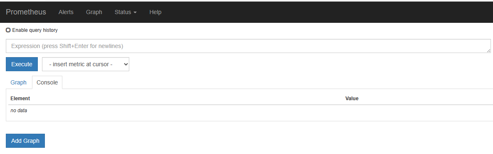
点击页面的 Status->Targets，可看到如下,说明我们配置的服务发现可以正常采集数据
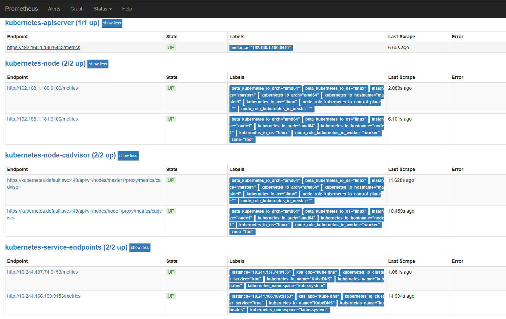
Prometheus 热加载
为了每次修改配置文件可以热加载 prometheus，也就是不停止 prometheus，就可以使配置生效，想要使配置生效可用如下热加载命令
1 2 3 4 5 6 7 8 9 10 11 12 13 14 15 16 17 18 [root@master1 ~]# kubectl get pods -n monitor-sa -o wide -l app=prometheus NAME READY STATUS RESTARTS AGE IP NODE NOMINATED NODE READINESS GATES prometheus-server-657bd8cb4d-wq66t 1/1 Running 0 37m 10.244.166.171 node1 <none> <none> # 10.244.166.171 是 Prometheus 的 pod 的 IP 地址 # 想要使配置生效可用如下命令热加载 curl -X POST http://10.244.166.171:9090/-/reload # 热加载速度比较慢，可以暴力重启 prometheus，如修改上面的 prometheus-cfg.yaml 文件之后，可执行如下强制删除： kubectl delete -f prometheus-cfg.yaml kubectl delete -f prometheus-deploy.yaml # 然后再通过 apply 更新： kubectl apply -f prometheus-cfg.yaml kubectl apply -f prometheus-deploy.yaml # 注意：线上最好热加载，暴力删除可能造成监控数据的丢失
可视化 UI 界面 Grafana 的安装和配置 Grafana 介绍
Grafana 是一个跨平台的开源的度量分析和可视化工具，可以将采集的数据可视化的展示，并及时通知给告警接收方。它主要有以下六大特点：
展示方式：快速灵活的客户端图表，面板插件有许多不同方式的可视化指标和日志，官方库中具有丰富的仪表盘插件，比如热图、折线图、图表等多种展示方式；
数据源：Graphite，InfluxDB，OpenTSDB，Prometheus，Elasticsearch，CloudWatch 和 KairosDB 等；
通知提醒：以可视方式定义最重要指标的警报规则，Grafana 将不断计算并发送通知，在数据达到阈值时通过 Slack、PagerDuty 等获得通知；
混合展示：在同一图表中混合使用不同的数据源，可以基于每个查询指定数据源，甚至自定义数据源；
注释：使用来自不同数据源的丰富事件注释图表，将鼠标悬停在事件上会显示完整的事件元数据和标记。
安装 Grafana 1 2 3 4 5 6 7 8 9 10 11 12 13 14 15 16 17 18 19 20 21 22 23 24 25 26 27 28 29 30 31 32 33 34 35 36 37 38 39 40 41 42 43 44 45 46 47 48 49 50 51 52 53 54 55 56 57 58 59 60 61 62 63 64 65 66 67 68 69 70 71 72 73 74 75 76 77 78 79 80 81 82 83 84 85 86 87 88 89 90 apiVersion: apps/v1 kind: Deployment metadata: name: monitoring-grafana namespace: kube-system spec: replicas: 1 selector: matchLabels: task: monitoring k8s-app: grafana template: metadata: labels: task: monitoring k8s-app: grafana spec: containers: - name: grafana image: k8s.gcr.io/heapster-grafana-amd64:v5.0.4 ports: - containerPort: 3000 protocol: TCP volumeMounts: - mountPath: /etc/ssl/certs name: ca-certificates readOnly: true - mountPath: /var name: grafana-storage env: - name: INFLUXDB_HOST value: monitoring-influxdb - name: GF_SERVER_HTTP_PORT value: "3000" - name: GF_AUTH_BASIC_ENABLED value: "false" - name: GF_AUTH_ANONYMOUS_ENABLED value: "true" - name: GF_AUTH_ANONYMOUS_ORG_ROLE value: Admin - name: GF_SERVER_ROOT_URL value: / volumes: - name: ca-certificates hostPath: path: /etc/ssl/certs - name: grafana-storage emptyDir: {} --- apiVersion: v1 kind: Service metadata: labels: kubernetes.io/cluster-service: 'true' kubernetes.io/name: monitoring-grafana name: monitoring-grafana namespace: kube-system spec: ports: - port: 80 targetPort: 3000 selector: k8s-app: grafana type: NodePort [root@master1 ~ ] NAME READY STATUS RESTARTS AGE monitoring-grafana-675798bf47-cxhx9 1 /1 Running 0 49s [root@master1 ~ ] NAME TYPE CLUSTER-IP EXTERNAL-IP PORT(S) AGE kube-dns ClusterIP 10.96 .0 .10 <none> 53 /UDP,53/TCP,9153/TCP 15d metrics-server ClusterIP 10.109 .3 .168 <none> 443 /TCP 11d monitoring-grafana NodePort 10.97 .201 .167 <none> 80 :30787/TCP 10s
Grafana 界面接入 Prometheus 数据源
登录 grafana ，在浏览器访问 192.168.1.180:30787
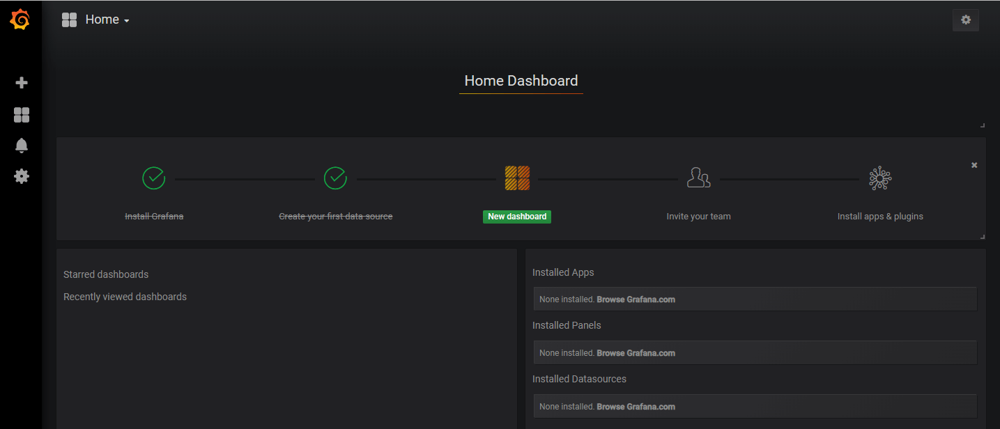
配置 grafana 界面：选择 Create your first data source
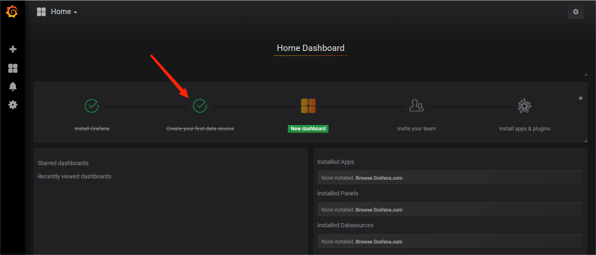
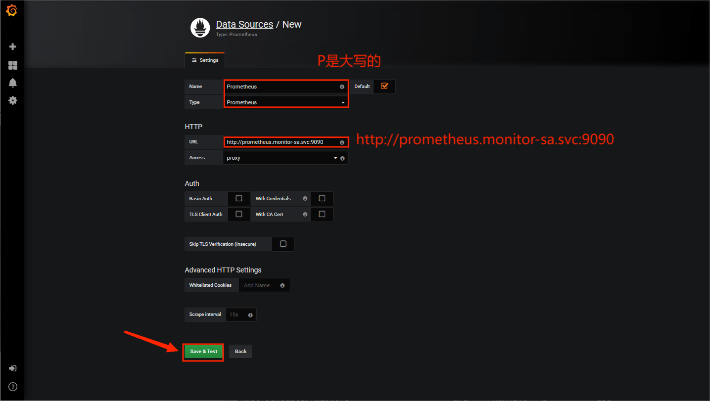
导入监控模板：node_exporter.json(模板下载路径https://grafana.com/dashboards?dataSource=prometheus&search=kubernetes )
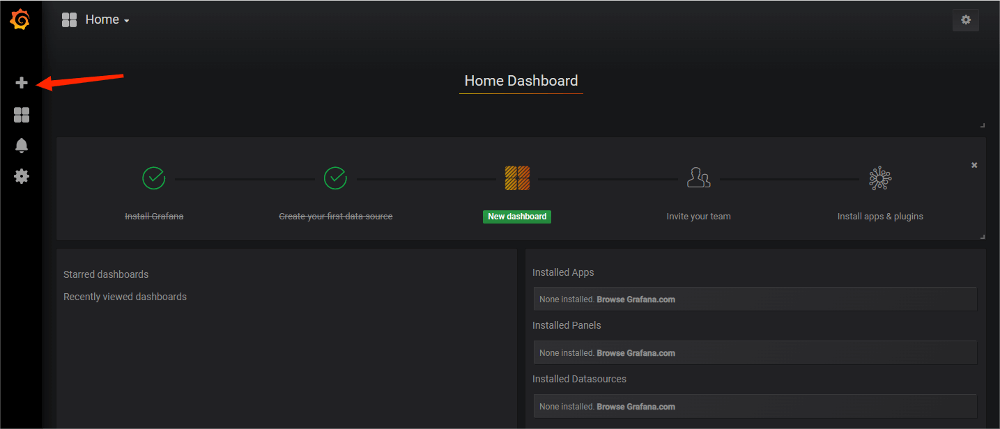
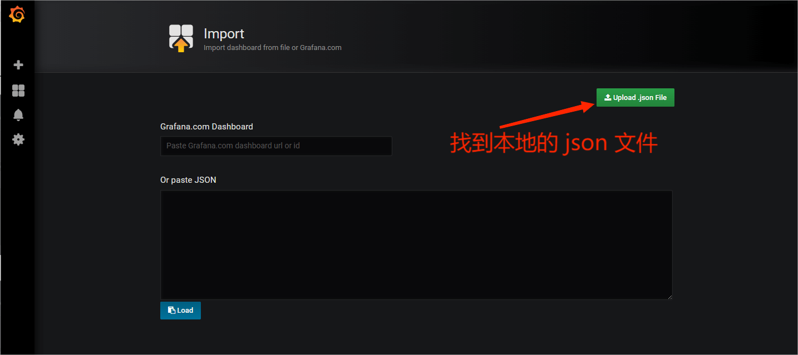
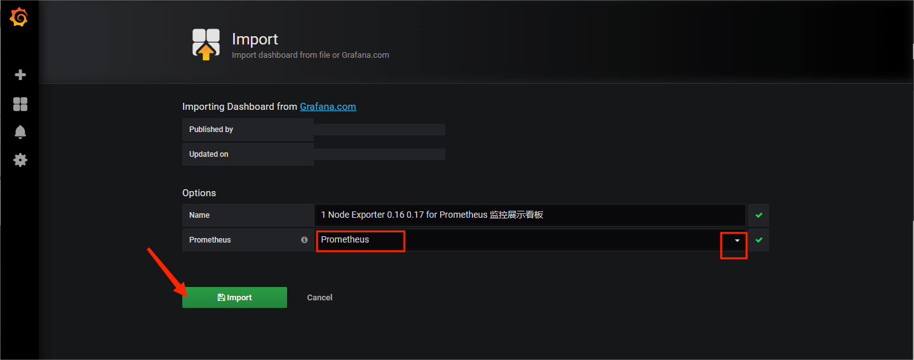
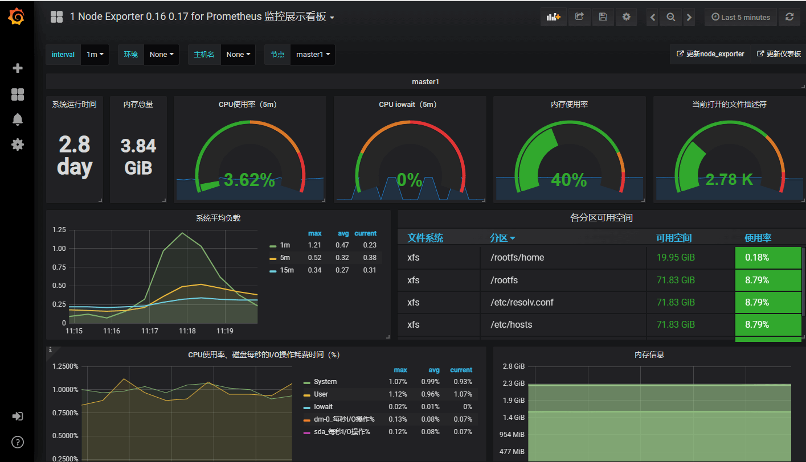
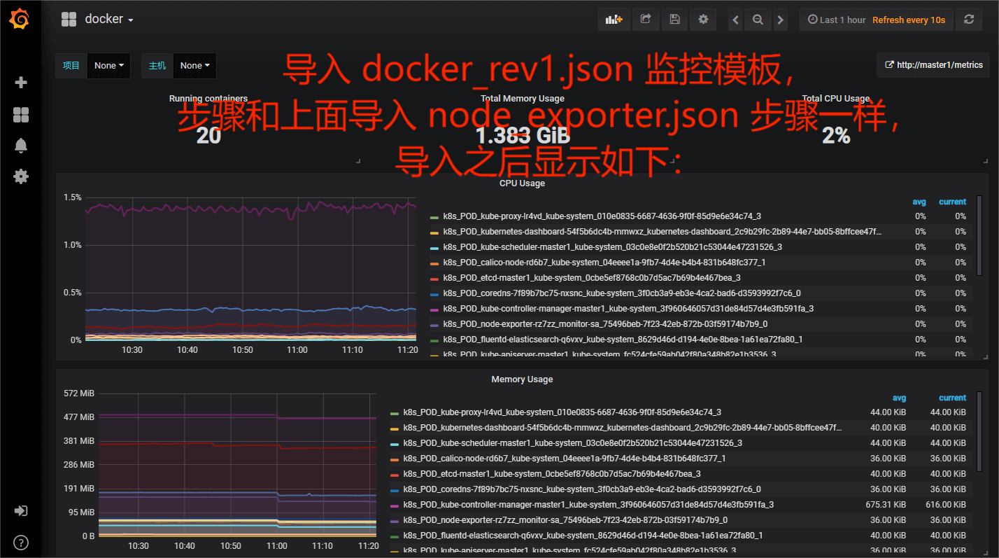
扩展：如果 Grafana 导入 Prometheusz 之后，发现仪表盘没有数据，如何排查？
打开 grafana 界面，找到仪表盘对应无数据的图标
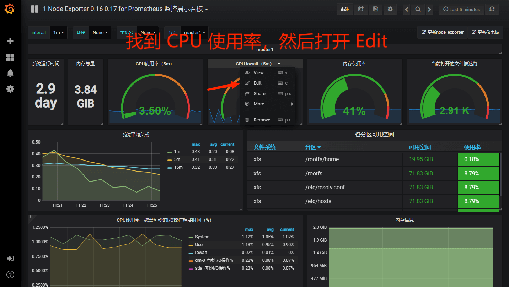
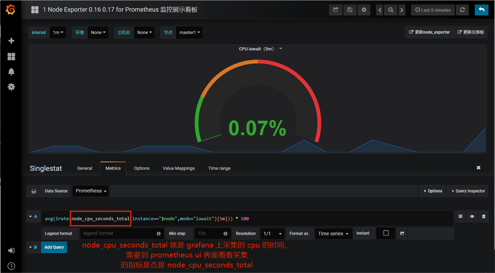
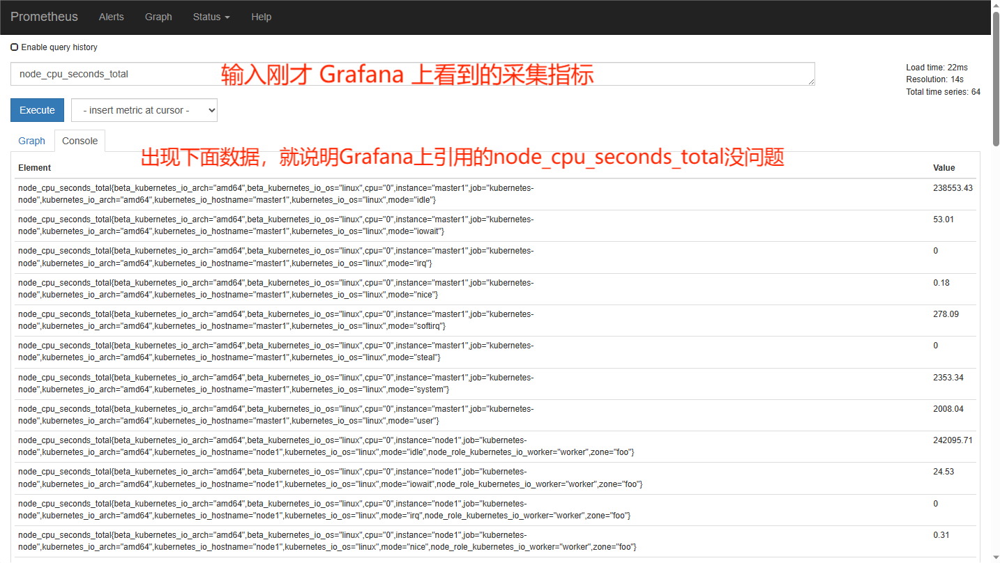
如果在 prometheus ui 界面输入 node_cpu_seconds_total 没有数据，那就看看是不是 prometheus 采集的数据是 node_cpu_seconds_totals，怎么看呢？
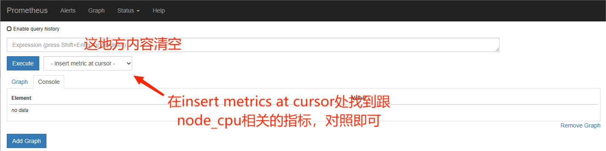
然后把 Grafana 中的指标改为 Prometheus 中可以查询到数据的指标
安装 kube-state-metrics 组件
kube-state-metrics 通过监听 API Server 生成有关资源对象的状态指标，比如 Deployment、Node、Pod，需要注意的是 kube-state-metrics 只是简单的提供一个 metrics 数据，并不会存储这些指标数据，所以我们可以使用 Prometheus 来抓取这些数据然后存储，主要关注的是业务相关的一些元数据，比如 Deployment、Pod、副本状态等；调度了多少个 replicas？现在可用的有几个？多少个 Pod 是 running/stopped/terminated 状态？Pod 重启了多少次？我有多少 job 在运行中。
创建 sa，并对 sa 授权 1 2 3 4 5 6 7 8 9 10 11 12 13 14 15 16 17 18 19 20 21 22 23 24 25 26 27 28 29 30 31 32 33 34 35 36 37 38 39 40 --- apiVersion: v1 kind: ServiceAccount metadata: name: kube-state-metrics namespace: kube-system --- apiVersion: rbac.authorization.k8s.io/v1 kind: ClusterRole metadata: name: kube-state-metrics rules: - apiGroups: ["" ] resources: ["nodes" , "pods" , "services" , "resourcequotas" , "replicationcontrollers" , "limitranges" , "persistentvolumeclaims" , "persistentvolumes" , "namespaces" , "endpoints" ] verbs: ["list" , "watch" ] - apiGroups: ["extensions" ] resources: ["daemonsets" , "deployments" , "replicasets" ] verbs: ["list" , "watch" ] - apiGroups: ["apps" ] resources: ["statefulsets" ] verbs: ["list" , "watch" ] - apiGroups: ["batch" ] resources: ["cronjobs" , "jobs" ] verbs: ["list" , "watch" ] - apiGroups: ["autoscaling" ] resources: ["horizontalpodautoscalers" ] verbs: ["list" , "watch" ] --- apiVersion: rbac.authorization.k8s.io/v1 kind: ClusterRoleBinding metadata: name: kube-state-metrics roleRef: apiGroup: rbac.authorization.k8s.io kind: ClusterRole name: kube-state-metrics subjects: - kind: ServiceAccount name: kube-state-metrics namespace: kube-system
安装 kube-state-metrics 组件 1 2 3 4 5 6 7 8 9 10 11 12 13 14 15 16 17 18 19 20 21 22 23 24 25 26 apiVersion: apps/v1 kind: Deployment metadata: name: kube-state-metrics namespace: kube-system spec: replicas: 1 selector: matchLabels: app: kube-state-metrics template: metadata: labels: app: kube-state-metrics spec: serviceAccountName: kube-state-metrics containers: - name: kube-state-metrics image: quay.io/coreos/kube-state-metrics:v1.9.0 ports: - containerPort: 8080 [root@master1 ~ ] NAME READY STATUS RESTARTS AGE kube-state-metrics-58d4957bc5-l5jrq 1 /1 Running 0 22s
创建 service 1 2 3 4 5 6 7 8 9 10 11 12 13 14 15 16 17 18 19 20 apiVersion: v1 kind: Service metadata: annotations: prometheus.io/scrape: 'true' name: kube-state-metrics namespace: kube-system labels: app: kube-state-metrics spec: ports: - name: kube-state-metrics port: 8080 protocol: TCP selector: app: kube-state-metrics [root@master1 ~ ] NAME TYPE CLUSTER-IP EXTERNAL-IP PORT(S) AGE kube-state-metrics ClusterIP 10.108 .4 .65 <none> 8080 /TCP 28s
在 grafana web 界面导入 Kubernetes Cluster (Prometheus)-1577674936972.json 和 Kubernetes cluster monitoring (via Prometheus) (k8s 1.16)-1577691996738.json，Kubernetes Cluster (Prometheus)-1577674936972.json 和 Kubernetes cluster monitoring (via Prometheus) (k8s 1.16)-1577691996738.json
导入 Kubernetes Cluster (Prometheus)-1577674936972.json 文件
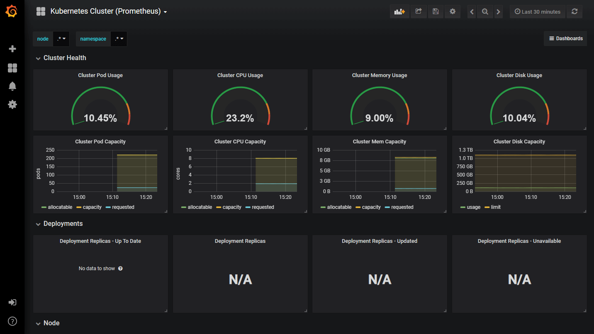
在 grafana web 界面导入 Kubernetes cluster monitoring (via Prometheus) (k8s 1.16)-1577691996738.json
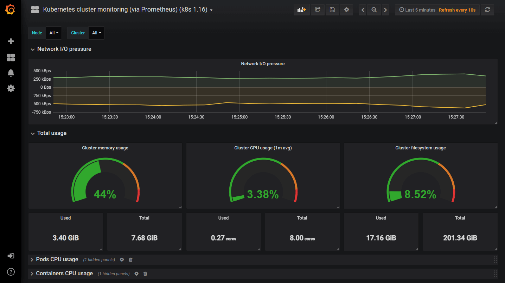
配置 alertmanager 发送报警到 qq 邮箱
报警：指 prometheus 将监测到的异常事件发送给 alertmanager
打开网易邮箱设置：开启POP3/SMTP/IMAP
1 2 3 4 5 6 7 8 9 10 11 12 13 14 15 16 17 18 19 20 21 22 23 24 25 kind: ConfigMap apiVersion: v1 metadata: name: alertmanager namespace: monitor-sa data: alertmanager.yml: |- global: resolve_timeout: 1m smtp_smarthost: 'smtp.163.com:25' # 网易邮箱SMTP服务器端口 smtp_from: 'ws*****03@163.com' # 指定从哪个邮箱发送报警 smtp_auth_username: 'ws*****03' # 发送邮箱的认证用户 smtp_auth_password: 'ZCX*******UMZEM' # 授权码 smtp_require_tls: false route: # 用于配置告警分发策略 group_by: [alertname] # 采用哪个标签来作为分组数据 group_wait: 10s # 组告警等待时间。也就是告警产生后等待10s，如果有同组告警一起发出 group_interval: 10s # 上下两组发送告警的间隔时间 repeat_interval: 10m # 重复发送告警的时间，减少相同邮件的发送频率，默认1h receiver: default-receiver # 定义谁来收告警 receivers: - name: 'default-receiver' email_configs: - to: '33*****957@qq.com' # 发送到哪个邮箱 send_resolved: true
报警处理流程如下：
Prometheus Server 监控目标主机上暴露的 http 接口（这里假设接口 A），通过 Promethes 配置的 ‘scrape_interval’ 定义的时间间隔，定期采集目标主机上监控数据。
当接口 A 不可用的时候，Server 端会持续的尝试从接口中取数据，直到”scrape_timeout”时间后停止尝试。这时候把接口的状态变为“DOWN”。
Prometheus 同时根据配置的”evaluation_interval”的时间间隔，定期（默认 1min）的对 Alert Rule 进行评估；当到达评估周期的时候，发现接口 A 为 DOWN，即 UP=0 为真，激活 Alert，进入“PENDING”状态，并记录当前 active 的时间；
当下一个 alert rule 的评估周期到来的时候，发现 UP=0 继续为真，然后判断警报 Active 的时间是否已经超出 rule 里的‘for’ 持续时间，如果未超出，则进入下一个评估周期；如果时间超出，则 alert 的状态变为“FIRING”；同时调用 Alertmanager 接口，发送相关报警数据。
AlertManager 收到报警数据后，会将警报信息进行分组，然后根据 alertmanager 配置的“group_wait”时间先进行等待。等 wait 时间过后再发送报警信息。
属于同一个 Alert Group 的警报，在等待的过程中可能进入新的 alert，如果之前的报警已经成功发出，那么间隔“group_interval”的时间间隔后再重新发送报警信息。比如配置的是邮件报警，那么同属一个 group 的报警信息会汇总在一个邮件里进行发送。
如果 Alert Group 里的警报一直没发生变化并且已经成功发送，等待‘repeat_interval’时间间隔之后再重复发送相同的报警邮件；如果之前的警报没有成功发送，则相当于触发第 6 条条件，则需要等待 group_interval 时间间隔后重复发送。
同时最后至于警报信息具体发给谁，满足什么样的条件下指定警报接收人，设置不同报警发送频率，这里有 alertmanager 的 route 路由规则进行配置。
创建 prometheus 和告警规则配置文件 1 2 3 4 5 6 7 8 9 10 11 12 13 14 15 16 17 18 19 20 21 22 23 24 25 26 27 28 29 30 31 32 33 34 35 36 37 38 39 40 41 42 43 44 45 46 47 48 49 50 51 52 53 54 55 56 57 58 59 60 61 62 63 64 65 66 67 68 69 70 71 72 73 74 75 76 77 78 79 80 81 82 83 84 85 86 87 88 89 90 91 92 93 94 95 96 97 98 99 100 101 102 103 104 105 106 107 108 109 110 111 112 113 114 115 116 117 118 119 120 121 122 123 124 125 126 127 128 129 130 131 132 133 134 135 136 137 138 139 140 141 142 143 144 145 146 147 148 149 150 151 152 153 154 155 156 157 158 159 160 161 162 163 164 165 166 167 168 169 170 171 172 173 174 175 176 177 178 179 180 181 182 183 184 185 186 187 188 189 190 191 192 193 194 195 196 197 198 199 200 201 202 203 204 205 206 207 208 209 210 211 212 213 214 215 216 217 218 219 220 221 222 223 224 225 226 227 228 229 230 231 232 233 234 235 236 237 238 239 240 241 242 243 244 245 246 247 248 249 250 251 252 253 254 255 256 257 258 259 260 261 262 263 264 265 266 267 268 269 270 271 272 273 274 275 276 277 278 279 280 281 282 283 284 285 286 287 288 289 290 291 292 293 294 295 296 297 298 299 300 301 302 303 304 305 306 307 308 309 310 311 312 313 314 315 316 317 318 319 320 321 322 323 324 325 326 327 328 329 330 331 332 333 334 335 336 337 338 339 340 341 342 343 344 345 346 347 348 349 350 351 352 353 354 355 356 357 358 359 360 361 362 363 364 365 366 367 368 369 370 371 372 373 374 375 376 377 378 379 380 381 382 383 384 385 386 387 388 389 390 391 392 393 394 395 396 397 398 399 400 401 402 403 404 405 406 407 408 409 410 411 412 413 414 415 416 417 418 419 420 421 422 423 424 425 426 427 428 429 430 431 432 433 434 435 436 437 438 439 440 441 442 443 444 445 446 447 448 449 450 451 452 453 454 455 456 457 458 459 460 461 462 463 464 465 466 467 468 469 470 471 472 473 474 475 476 477 478 479 480 481 482 483 484 485 486 487 488 489 490 491 492 493 494 495 496 497 498 499 500 501 502 503 504 505 506 507 508 509 510 511 512 513 514 515 516 517 518 519 520 521 522 523 524 525 526 527 528 529 530 531 532 533 534 535 536 537 538 539 540 541 [root@master1 ~ ] [root@master1 ~ ] kind: ConfigMap apiVersion: v1 metadata: labels: app: prometheus name: prometheus-config namespace: monitor-sa data: prometheus.yml: | rule_files: - /etc/prometheus/rules.yml alerting: alertmanagers: - static_configs: - targets: ["localhost:9093"] global: scrape_interval: 15s scrape_timeout: 10s evaluation_interval: 1m scrape_configs: - job_name: 'kubernetes-node' kubernetes_sd_configs: - role: node relabel_configs: - source_labels: [__address__] regex: '(.*):10250' replacement: '${1}:9100' target_label: __address__ action: replace - action: labelmap regex: __meta_kubernetes_node_label_(.+) - job_name: 'kubernetes-node-cadvisor' kubernetes_sd_configs: - role: node scheme: https tls_config: ca_file: /var/run/secrets/kubernetes.io/serviceaccount/ca.crt bearer_token_file: /var/run/secrets/kubernetes.io/serviceaccount/token relabel_configs: - action: labelmap regex: __meta_kubernetes_node_label_(.+) - target_label: __address__ replacement: kubernetes.default.svc:443 - source_labels: [__meta_kubernetes_node_name] regex: (.+) target_label: __metrics_path__ replacement: /api/v1/nodes/${1}/proxy/metrics/cadvisor - job_name: 'kubernetes-apiserver' kubernetes_sd_configs: - role: endpoints scheme: https tls_config: ca_file: /var/run/secrets/kubernetes.io/serviceaccount/ca.crt bearer_token_file: /var/run/secrets/kubernetes.io/serviceaccount/token relabel_configs: - source_labels: [__meta_kubernetes_namespace, __meta_kubernetes_service_name, __meta_kubernetes_endpoint_port_name] action: keep regex: default;kubernetes;https - job_name: 'kubernetes-service-endpoints' kubernetes_sd_configs: - role: endpoints relabel_configs: - source_labels: [__meta_kubernetes_service_annotation_prometheus_io_scrape] action: keep regex: true - source_labels: [__meta_kubernetes_service_annotation_prometheus_io_scheme] action: replace target_label: __scheme__ regex: (https?) - source_labels: [__meta_kubernetes_service_annotation_prometheus_io_path] action: replace target_label: __metrics_path__ regex: (.+) - source_labels: [__address__, __meta_kubernetes_service_annotation_prometheus_io_port] action: replace target_label: __address__ regex: ([^:]+)(?::\d+)?;(\d+) replacement: $1:$2 - action: labelmap regex: __meta_kubernetes_service_label_(.+) - source_labels: [__meta_kubernetes_namespace] action: replace target_label: kubernetes_namespace - source_labels: [__meta_kubernetes_service_name] action: replace target_label: kubernetes_name - job_name: 'kubernetes-pods' kubernetes_sd_configs: - role: pod relabel_configs: - action: keep regex: true source_labels: - __meta_kubernetes_pod_annotation_prometheus_io_scrape - action: replace regex: (.+) source_labels: - __meta_kubernetes_pod_annotation_prometheus_io_path target_label: __metrics_path__ - action: replace regex: ([^:]+)(?::\d+)?;(\d+) replacement: $1:$2 source_labels: - __address__ - __meta_kubernetes_pod_annotation_prometheus_io_port target_label: __address__ - action: labelmap regex: __meta_kubernetes_pod_label_(.+) - action: replace source_labels: - __meta_kubernetes_namespace target_label: kubernetes_namespace - action: replace source_labels: - __meta_kubernetes_pod_name target_label: kubernetes_pod_name - job_name: 'kubernetes-schedule' scrape_interval: 5s static_configs: - targets: ['192.168.1.180:10251'] - job_name: 'kubernetes-controller-manager' scrape_interval: 5s static_configs: - targets: ['192.168.1.180:10252'] - job_name: 'kubernetes-kube-proxy' scrape_interval: 5s static_configs: - targets: ['192.168.1.180:10249','192.168.1.181:10249'] - job_name: 'kubernetes-etcd' scheme: https tls_config: ca_file: /var/run/secrets/kubernetes.io/k8s-certs/etcd/ca.crt cert_file: /var/run/secrets/kubernetes.io/k8s-certs/etcd/server.crt key_file: /var/run/secrets/kubernetes.io/k8s-certs/etcd/server.key scrape_interval: 5s static_configs: - targets: ['192.168.1.180:2379'] rules.yml: | groups: - name: example rules: - alert: kube-proxy的cpu使用率大于80% expr: rate(process_cpu_seconds_total{job=~"kubernetes-kube-proxy"}[1m]) * 100 > 80 for: 2s labels: severity: warnning annotations: description: "{{$labels.instance}}的{{$labels.job}}组件的cpu使用率超过80%" - alert: kube-proxy的cpu使用率大于90% expr: rate(process_cpu_seconds_total{job=~"kubernetes-kube-proxy"}[1m]) * 100 > 90 for: 2s labels: severity: critical annotations: description: "{{$labels.instance}}的{{$labels.job}}组件的cpu使用率超过90%" - alert: scheduler的cpu使用率大于80% expr: rate(process_cpu_seconds_total{job=~"kubernetes-schedule"}[1m]) * 100 > 80 for: 2s labels: severity: warnning annotations: description: "{{$labels.instance}}的{{$labels.job}}组件的cpu使用率超过80%" - alert: scheduler的cpu使用率大于90% expr: rate(process_cpu_seconds_total{job=~"kubernetes-schedule"}[1m]) * 100 > 90 for: 2s labels: severity: critical annotations: description: "{{$labels.instance}}的{{$labels.job}}组件的cpu使用率超过90%" - alert: controller-manager的cpu使用率大于80% expr: rate(process_cpu_seconds_total{job=~"kubernetes-controller-manager"}[1m]) * 100 > 80 for: 2s labels: severity: warnning annotations: description: "{{$labels.instance}}的{{$labels.job}}组件的cpu使用率超过80%" - alert: controller-manager的cpu使用率大于90% expr: rate(process_cpu_seconds_total{job=~"kubernetes-controller-manager"}[1m]) * 100 > 0 for: 2s labels: severity: critical annotations: description: "{{$labels.instance}}的{{$labels.job}}组件的cpu使用率超过90%" - alert: apiserver的cpu使用率大于80% expr: rate(process_cpu_seconds_total{job=~"kubernetes-apiserver"}[1m]) * 100 > 80 for: 2s labels: severity: warnning annotations: description: "{{$labels.instance}}的{{$labels.job}}组件的cpu使用率超过80%" - alert: apiserver的cpu使用率大于90% expr: rate(process_cpu_seconds_total{job=~"kubernetes-apiserver"}[1m]) * 100 > 90 for: 2s labels: severity: critical annotations: description: "{{$labels.instance}}的{{$labels.job}}组件的cpu使用率超过90%" - alert: etcd的cpu使用率大于80% expr: rate(process_cpu_seconds_total{job=~"kubernetes-etcd"}[1m]) * 100 > 80 for: 2s labels: severity: warnning annotations: description: "{{$labels.instance}}的{{$labels.job}}组件的cpu使用率超过80%" - alert: etcd的cpu使用率大于90% expr: rate(process_cpu_seconds_total{job=~"kubernetes-etcd"}[1m]) * 100 > 90 for: 2s labels: severity: critical annotations: description: "{{$labels.instance}}的{{$labels.job}}组件的cpu使用率超过90%" - alert: kube-state-metrics的cpu使用率大于80% expr: rate(process_cpu_seconds_total{k8s_app=~"kube-state-metrics"}[1m]) * 100 > 80 for: 2s labels: severity: warnning annotations: description: "{{$labels.instance}}的{{$labels.k8s_app}}组件的cpu使用率超过80%" value: "{{ $value }}%" threshold: "80%" - alert: kube-state-metrics的cpu使用率大于90% expr: rate(process_cpu_seconds_total{k8s_app=~"kube-state-metrics"}[1m]) * 100 > 0 for: 2s labels: severity: critical annotations: description: "{{$labels.instance}}的{{$labels.k8s_app}}组件的cpu使用率超过90%" value: "{{ $value }}%" threshold: "90%" - alert: coredns的cpu使用率大于80% expr: rate(process_cpu_seconds_total{k8s_app=~"kube-dns"}[1m]) * 100 > 80 for: 2s labels: severity: warnning annotations: description: "{{$labels.instance}}的{{$labels.k8s_app}}组件的cpu使用率超过80%" value: "{{ $value }}%" threshold: "80%" - alert: coredns的cpu使用率大于90% expr: rate(process_cpu_seconds_total{k8s_app=~"kube-dns"}[1m]) * 100 > 90 for: 2s labels: severity: critical annotations: description: "{{$labels.instance}}的{{$labels.k8s_app}}组件的cpu使用率超过90%" value: "{{ $value }}%" threshold: "90%" - alert: kube-proxy打开句柄数>600 expr: process_open_fds{job=~"kubernetes-kube-proxy"} > 600 for: 2s labels: severity: warnning annotations: description: "{{$labels.instance}}的{{$labels.job}}打开句柄数>600" value: "{{ $value }}" - alert: kube-proxy打开句柄数>1000 expr: process_open_fds{job=~"kubernetes-kube-proxy"} > 1000 for: 2s labels: severity: critical annotations: description: "{{$labels.instance}}的{{$labels.job}}打开句柄数>1000" value: "{{ $value }}" - alert: kubernetes-schedule打开句柄数>600 expr: process_open_fds{job=~"kubernetes-schedule"} > 600 for: 2s labels: severity: warnning annotations: description: "{{$labels.instance}}的{{$labels.job}}打开句柄数>600" value: "{{ $value }}" - alert: kubernetes-schedule打开句柄数>1000 expr: process_open_fds{job=~"kubernetes-schedule"} > 1000 for: 2s labels: severity: critical annotations: description: "{{$labels.instance}}的{{$labels.job}}打开句柄数>1000" value: "{{ $value }}" - alert: kubernetes-controller-manager打开句柄数>600 expr: process_open_fds{job=~"kubernetes-controller-manager"} > 600 for: 2s labels: severity: warnning annotations: description: "{{$labels.instance}}的{{$labels.job}}打开句柄数>600" value: "{{ $value }}" - alert: kubernetes-controller-manager打开句柄数>1000 expr: process_open_fds{job=~"kubernetes-controller-manager"} > 1000 for: 2s labels: severity: critical annotations: description: "{{$labels.instance}}的{{$labels.job}}打开句柄数>1000" value: "{{ $value }}" - alert: kubernetes-apiserver打开句柄数>600 expr: process_open_fds{job=~"kubernetes-apiserver"} > 600 for: 2s labels: severity: warnning annotations: description: "{{$labels.instance}}的{{$labels.job}}打开句柄数>600" value: "{{ $value }}" - alert: kubernetes-apiserver打开句柄数>1000 expr: process_open_fds{job=~"kubernetes-apiserver"} > 1000 for: 2s labels: severity: critical annotations: description: "{{$labels.instance}}的{{$labels.job}}打开句柄数>1000" value: "{{ $value }}" - alert: kubernetes-etcd打开句柄数>600 expr: process_open_fds{job=~"kubernetes-etcd"} > 600 for: 2s labels: severity: warnning annotations: description: "{{$labels.instance}}的{{$labels.job}}打开句柄数>600" value: "{{ $value }}" - alert: kubernetes-etcd打开句柄数>1000 expr: process_open_fds{job=~"kubernetes-etcd"} > 1000 for: 2s labels: severity: critical annotations: description: "{{$labels.instance}}的{{$labels.job}}打开句柄数>1000" value: "{{ $value }}" - alert: coredns expr: process_open_fds{k8s_app=~"kube-dns"} > 600 for: 2s labels: severity: warnning annotations: description: "插件{{$labels.k8s_app}}({{$labels.instance}}): 打开句柄数超过600" value: "{{ $value }}" - alert: coredns expr: process_open_fds{k8s_app=~"kube-dns"} > 1000 for: 2s labels: severity: critical annotations: description: "插件{{$labels.k8s_app}}({{$labels.instance}}): 打开句柄数超过1000" value: "{{ $value }}" - alert: kube-proxy expr: process_virtual_memory_bytes{job=~"kubernetes-kube-proxy"} > 2000000000 for: 2s labels: severity: warnning annotations: description: "组件{{$labels.job}}({{$labels.instance}}): 使用虚拟内存超过2G" value: "{{ $value }}" - alert: scheduler expr: process_virtual_memory_bytes{job=~"kubernetes-schedule"} > 2000000000 for: 2s labels: severity: warnning annotations: description: "组件{{$labels.job}}({{$labels.instance}}): 使用虚拟内存超过2G" value: "{{ $value }}" - alert: kubernetes-controller-manager expr: process_virtual_memory_bytes{job=~"kubernetes-controller-manager"} > 2000000000 for: 2s labels: severity: warnning annotations: description: "组件{{$labels.job}}({{$labels.instance}}): 使用虚拟内存超过2G" value: "{{ $value }}" - alert: kubernetes-apiserver expr: process_virtual_memory_bytes{job=~"kubernetes-apiserver"} > 2000000000 for: 2s labels: severity: warnning annotations: description: "组件{{$labels.job}}({{$labels.instance}}): 使用虚拟内存超过2G" value: "{{ $value }}" - alert: kubernetes-etcd expr: process_virtual_memory_bytes{job=~"kubernetes-etcd"} > 2000000000 for: 2s labels: severity: warnning annotations: description: "组件{{$labels.job}}({{$labels.instance}}): 使用虚拟内存超过2G" value: "{{ $value }}" - alert: kube-dns expr: process_virtual_memory_bytes{k8s_app=~"kube-dns"} > 2000000000 for: 2s labels: severity: warnning annotations: description: "插件{{$labels.k8s_app}}({{$labels.instance}}): 使用虚拟内存超过2G" value: "{{ $value }}" - alert: HttpRequestsAvg expr: sum(rate(rest_client_requests_total{job=~"kubernetes-kube-proxy|kubernetes-kubelet|kubernetes-schedule|kubernetes-control-manager|kubernetes-apiservers"}[1m])) > 1000 for: 2s labels: team: admin annotations: description: "组件{{$labels.job}}({{$labels.instance}}): TPS超过1000" value: "{{ $value }}" threshold: "1000" - alert: Pod_restarts expr: kube_pod_container_status_restarts_total{namespace=~"kube-system|default|monitor-sa"} > 0 for: 2s labels: severity: warnning annotations: description: "在{{$labels.namespace}}名称空间下发现{{$labels.pod}}这个pod下的容器{{$labels.container}}被重启,这个监控指标是由{{$labels.instance}}采集的" value: "{{ $value }}" threshold: "0" - alert: Pod_waiting expr: kube_pod_container_status_waiting_reason{namespace=~"kube-system|default"} == 1 for: 2s labels: team: admin annotations: description: "空间{{$labels.namespace}}({{$labels.instance}}): 发现{{$labels.pod}}下的{{$labels.container}}启动异常等待中" value: "{{ $value }}" threshold: "1" - alert: Pod_terminated expr: kube_pod_container_status_terminated_reason{namespace=~"kube-system|default|monitor-sa"} == 1 for: 2s labels: team: admin annotations: description: "空间{{$labels.namespace}}({{$labels.instance}}): 发现{{$labels.pod}}下的{{$labels.container}}被删除" value: "{{ $value }}" threshold: "1" - alert: Etcd_leader expr: etcd_server_has_leader{job="kubernetes-etcd"} == 0 for: 2s labels: team: admin annotations: description: "组件{{$labels.job}}({{$labels.instance}}): 当前没有leader" value: "{{ $value }}" threshold: "0" - alert: Etcd_leader_changes expr: rate(etcd_server_leader_changes_seen_total{job="kubernetes-etcd"}[1m]) > 0 for: 2s labels: team: admin annotations: description: "组件{{$labels.job}}({{$labels.instance}}): 当前leader已发生改变" value: "{{ $value }}" threshold: "0" - alert: Etcd_failed expr: rate(etcd_server_proposals_failed_total{job="kubernetes-etcd"}[1m]) > 0 for: 2s labels: team: admin annotations: description: "组件{{$labels.job}}({{$labels.instance}}): 服务失败" value: "{{ $value }}" threshold: "0" - alert: Etcd_db_total_size expr: etcd_debugging_mvcc_db_total_size_in_bytes{job="kubernetes-etcd"} > 10000000000 for: 2s labels: team: admin annotations: description: "组件{{$labels.job}}({{$labels.instance}})：db空间超过10G" value: "{{ $value }}" threshold: "10G" - alert: Endpoint_ready expr: kube_endpoint_address_not_ready{namespace=~"kube-system|default"} == 1 for: 2s labels: team: admin annotations: description: "空间{{$labels.namespace}}({{$labels.instance}}): 发现{{$labels.endpoint}}不可用" value: "{{ $value }}" threshold: "1" - name: 物理节点状态-监控告警 rules: - alert: 物理节点cpu使用率 expr: 100-avg(irate(node_cpu_seconds_total{mode="idle"}[5m])) by(instance)*100 > 90 for: 2s labels: severity: ccritical annotations: summary: "{{ $labels.instance }}cpu使用率过高" description: "{{ $labels.instance }}的cpu使用率超过90%,当前使用率[{{ $value }}],需要排查处理" - alert: 物理节点内存使用率 expr: (node_memory_MemTotal_bytes - (node_memory_MemFree_bytes + node_memory_Buffers_bytes + node_memory_Cached_bytes)) / node_memory_MemTotal_bytes * 100 > 90 for: 2s labels: severity: critical annotations: summary: "{{ $labels.instance }}内存使用率过高" description: "{{ $labels.instance }}的内存使用率超过90%,当前使用率[{{ $value }}],需要排查处理" - alert: InstanceDown expr: up == 0 for: 2s labels: severity: critical annotations: summary: "{{ $labels.instance }}: 服务器宕机" description: "{{ $labels.instance }}: 服务器延时超过2分钟" - alert: 物理节点磁盘的IO性能 expr: 100-(avg(irate(node_disk_io_time_seconds_total[1m])) by(instance)* 100) < 60 for: 2s labels: severity: critical annotations: summary: "{{$labels.mountpoint}} 流入磁盘IO使用率过高！" description: "{{$labels.mountpoint }} 流入磁盘IO大于60%(目前使用:{{$value}})" - alert: 入网流量带宽 expr: ((sum(rate (node_network_receive_bytes_total{device!~'tap.*|veth.*|br.*|docker.*|virbr*|lo*'}[5m])) by (instance)) / 100) > 102400 for: 2s labels: severity: critical annotations: summary: "{{$labels.mountpoint}} 流入网络带宽过高！" description: "{{$labels.mountpoint }}流入网络带宽持续5分钟高于100M. RX带宽使用率{{$value}}" - alert: 出网流量带宽 expr: ((sum(rate (node_network_transmit_bytes_total{device!~'tap.*|veth.*|br.*|docker.*|virbr*|lo*'}[5m])) by (instance)) / 100) > 102400 for: 2s labels: severity: critical annotations: summary: "{{$labels.mountpoint}} 流出网络带宽过高！" description: "{{$labels.mountpoint }}流出网络带宽持续5分钟高于100M. RX带宽使用率{{$value}}" - alert: TCP会话 expr: node_netstat_Tcp_CurrEstab > 1000 for: 2s labels: severity: critical annotations: summary: "{{$labels.mountpoint}} TCP_ESTABLISHED过高！" description: "{{$labels.mountpoint }} TCP_ESTABLISHED大于1000%(目前使用:{{$value}}%)" - alert: 磁盘容量 expr: 100-(node_filesystem_free_bytes{fstype=~"ext4|xfs"}/node_filesystem_size_bytes {fstype=~"ext4|xfs"}*100) > 80 for: 2s labels: severity: critical annotations: summary: "{{$labels.mountpoint}} 磁盘分区使用率过高！" description: "{{$labels.mountpoint }} 磁盘分区使用大于80%(目前使用:{{$value}}%)"
安装 prometheus 和 alertmanager 1 2 3 4 5 6 7 8 9 10 11 12 13 14 15 16 17 18 19 20 21 22 23 24 25 26 27 28 29 30 31 32 33 34 35 36 37 38 39 40 41 42 43 44 45 46 47 48 49 50 51 52 53 54 55 56 57 58 59 60 61 62 63 64 65 66 67 68 69 70 71 72 73 74 75 76 77 78 79 80 81 82 83 84 85 apiVersion: apps/v1 kind: Deployment metadata: name: prometheus-server namespace: monitor-sa labels: app: prometheus spec: replicas: 1 selector: matchLabels: app: prometheus component: server template: metadata: labels: app: prometheus component: server annotations: prometheus.io/scrape: 'false' spec: nodeName: node1 serviceAccountName: monitor containers: - name: prometheus image: prom/prometheus:v2.2.1 imagePullPolicy: IfNotPresent command: - "/bin/prometheus" args: - "--config.file=/etc/prometheus/prometheus.yml" - "--storage.tsdb.path=/prometheus" - "--storage.tsdb.retention=24h" - "--web.enable-lifecycle" ports: - containerPort: 9090 protocol: TCP volumeMounts: - mountPath: /etc/prometheus name: prometheus-config - mountPath: /prometheus/ name: prometheus-storage-volume - name: k8s-certs mountPath: /var/run/secrets/kubernetes.io/k8s-certs/etcd/ - name: alertmanager image: prom/alertmanager:v0.14.0 imagePullPolicy: IfNotPresent args: - "--config.file=/etc/alertmanager/alertmanager.yml" - "--log.level=debug" ports: - containerPort: 9093 protocol: TCP name: alertmanager volumeMounts: - name: alertmanager-config mountPath: /etc/alertmanager - name: alertmanager-storage mountPath: /alertmanager - name: localtime mountPath: /etc/localtime volumes: - name: prometheus-config configMap: name: prometheus-config - name: prometheus-storage-volume hostPath: path: /data type: Directory - name: k8s-certs secret: secretName: etcd-certs - name: alertmanager-config configMap: name: alertmanager - name: alertmanager-storage hostPath: path: /data/alertmanager type: DirectoryOrCreate - name: localtime hostPath: path: /usr/share/zoneinfo/Asia/Shanghai
生成一个 etcd-certs，这个在部署 prometheus 需要
1 2 3 4 5 6 7 8 9 10 [root@master1 ~]# kubectl -n monitor-sa create secret generic etcd-certs \ --from-file=/etc/kubernetes/pki/etcd/server.key \ --from-file=/etc/kubernetes/pki/etcd/server.crt \ --from-file=/etc/kubernetes/pki/etcd/ca.crt [root@master1 ~]# kubectl delete -f prometheus/prometheus-deploy.yaml [root@master1 ~]# kubectl apply -f prometheus-alertmanager-deploy.yaml [root@master1 ~]# kubectl get pods -n monitor-sa | grep prometheus prometheus-server-55cd9cb6d7-6mqsh 2/2 Running 0 27s
部署 alertmanager 的 service，方便在浏览器访问
1 2 3 4 5 6 7 8 9 10 11 12 13 14 15 16 17 18 19 20 21 22 23 24 25 26 27 28 apiVersion: v1 kind: Service metadata: labels: name: prometheus kubernetes.io/cluster-service: 'true' name: alertmanager namespace: monitor-sa spec: ports: - name: alertmanager nodePort: 30066 port: 9093 protocol: TCP targetPort: 9093 selector: app: prometheus sessionAffinity: None type: NodePort [root@master1 ~]# kubectl apply -f alertmanager-svc.yaml [root@master1 ~]# kubectl get svc -n monitor-sa NAME TYPE CLUSTER-IP EXTERNAL-IP PORT(S) AGE alertmanager NodePort 10.96.98.140 <none> 9093:30066/TCP 14s prometheus NodePort 10.110.221.157 <none> 9090:32759/TCP 23h 注意：上面可以看到 prometheus 的 service 在物理机映射的端口是 32732，alertmanager 的 service 在物理机映射的端口是 30066
访问192.168.1.180:30066/#/alerts
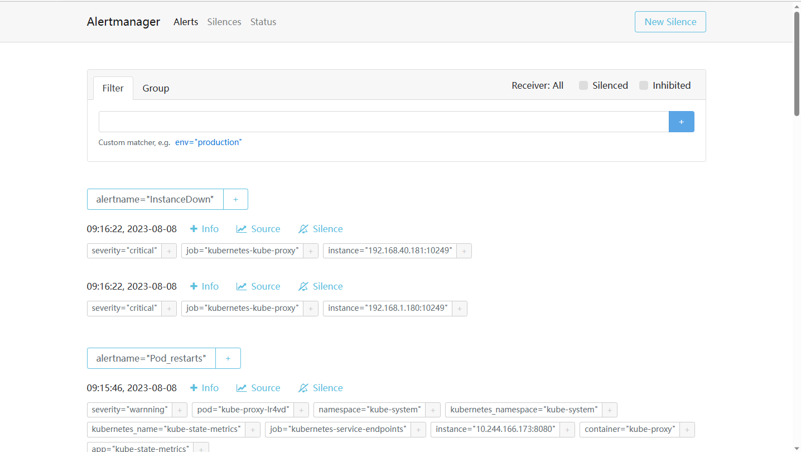
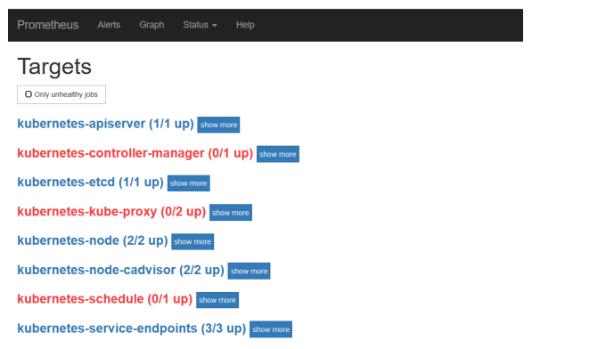
1 2 3 4 5 6 7 8 9 10 11 12 13 14 15 16 17 18 19 20 21 22 23 24 25 # 从上面可以发现 kubernetes-controller-manager 和 kubernetes-schedule 都显示连接不上对应的端口 # 可按如下方法处理： vim /etc/kubernetes/manifests/kube-scheduler.yaml 修改如下内容： 把--bind-address=127.0.0.1 变成--bind-address=192.168.1.180 把 httpGet:字段下的 hosts 由 127.0.0.1 变成 192.168.1.180 把—port=0 删除 # 注意：192.168.1.180 是 k8s 的控制节点 master1 的 ip # 修改之后在 k8s 各个节点执行 [root@master1 ~]# systemctl restart kubelet [root@master1 ~]# kubectl get cs NAME STATUS MESSAGE ERROR scheduler Healthy ok controller-manager Healthy ok etcd-0 Healthy {"health":"true"} ss -antulp | grep :10251 ss -antulp | grep :10252 # 可以看到相应的端口已经被物理机监听了 # 点击 status->targets，可看到如下
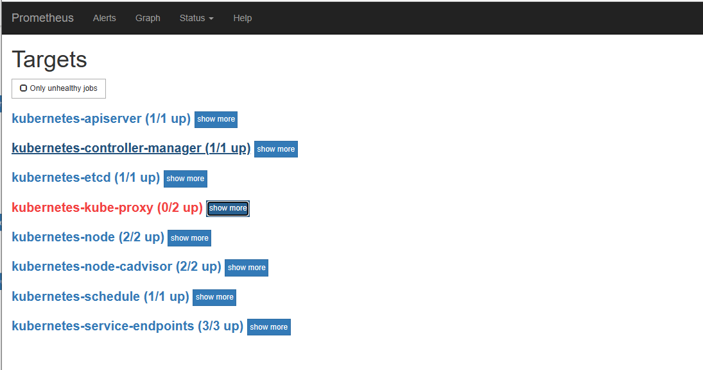
1 2 3 4 5 6 7 8 9 10 11 12 # 是因为 kube-proxy 默认端口 10249 是监听在 127.0.0.1 上的，需要改成监听到物理节点上，按如下方法修改，线上建议在安装 k8s 的时候就做修改，这样风险小一些： kubectl edit configmap kube-proxy -n kube-system # 把 metricsBindAddress 这段修改成 metricsBindAddress: 0.0.0.0:10249 # 然后重新启动 kube-proxy 这个 pod [root@master1]# kubectl get pods -n kube-system | grep kube-proxy |awk '{print $1}' | xargs kubectl delete pods -n kube-system [root@master1]# ss -antulp |grep :10249 可显示如下 tcp LISTEN 0 128 [::]:10249 [::]:* 点击 status->targets，可看到如下
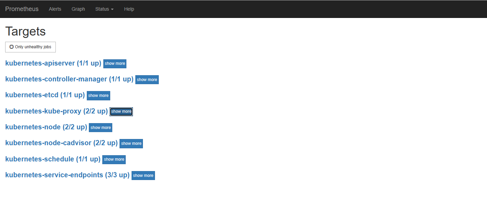
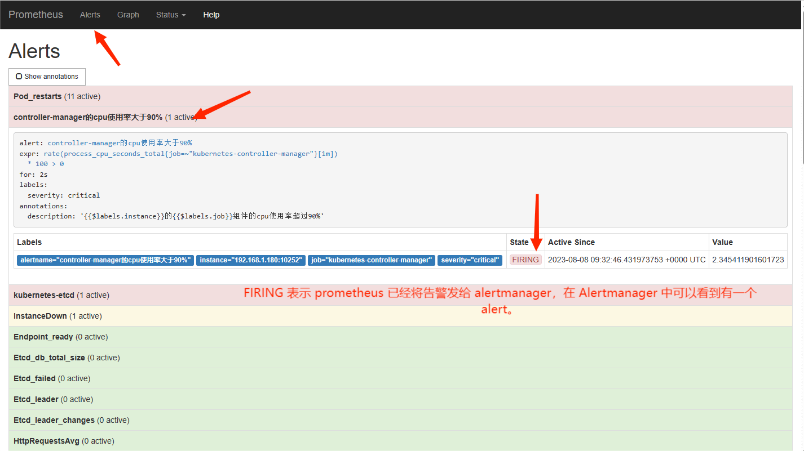
登录到 alertmanager web 界面 192.168.1.180:30066
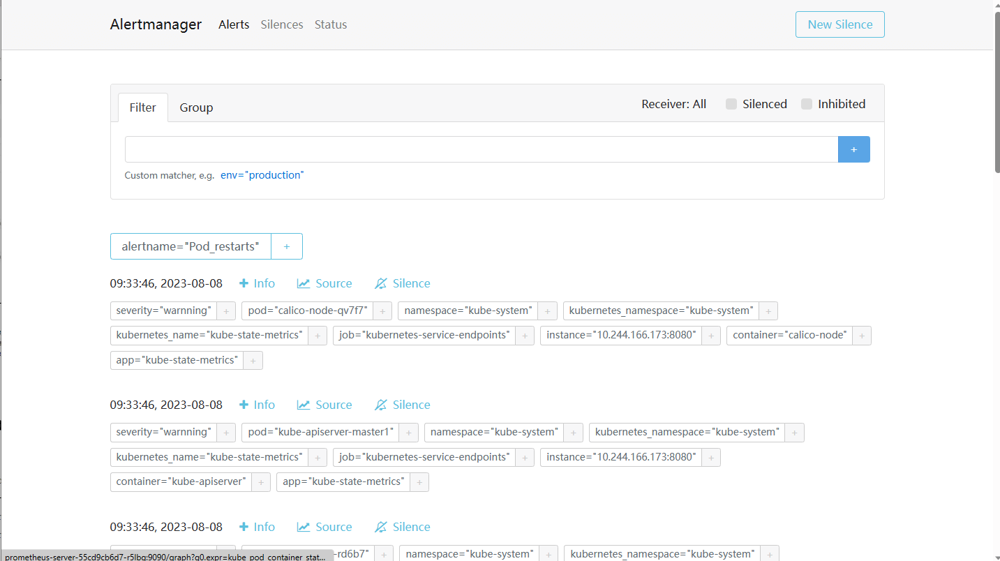
查看QQ邮箱，可以收到报警